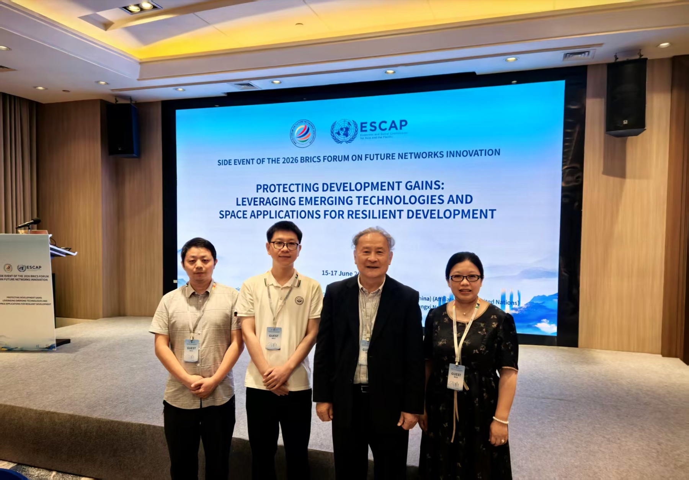
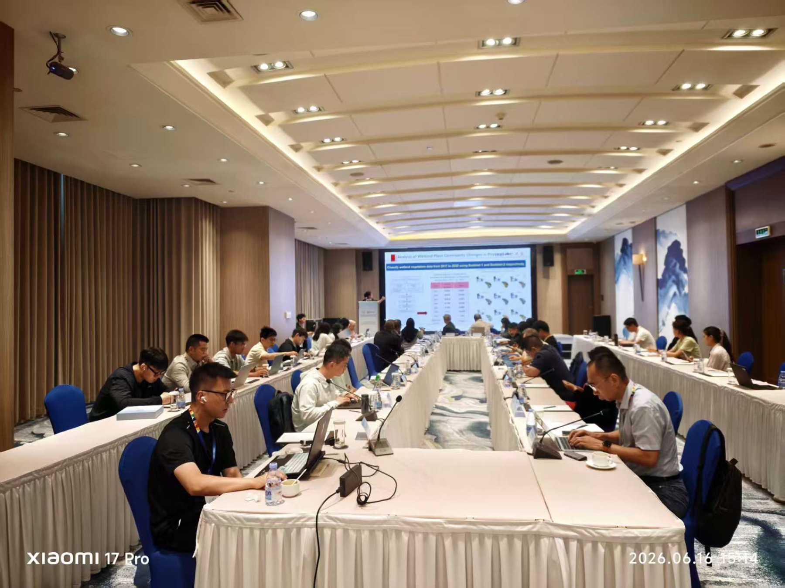

学术交流 · 2026 年 6 月 16 日 · 深圳
课题组受邀参加 2026 金砖国家未来网络创新论坛边会
课题组负责人刘冲副教授应邀作主旨报告，分享面向韧性自然资源管理的泛北极基础设施卫星遥感制图与监测研究。

2026 年 6 月 15–17 日，2026 金砖国家未来网络创新论坛在深圳举行。作为联合国亚洲及太平洋经济社会委员会（ESCAP）组织的边会，“Protecting Development Gains: Leveraging Emerging Technologies and Space Applications for Resilient Development”聚焦新兴技术与空间应用如何服务韧性发展。
课题组受邀参加本次活动。刘冲副教授作题为 “Pan-Arctic Infrastructure Mapping and Monitoring via Satellite Remote Sensing for Resilient Natural Resource Management” 的主旨报告，介绍了利用卫星遥感开展泛北极基础设施制图与动态监测的研究进展，并讨论其对自然资源管理与环境风险评估的意义。
面向韧性发展的空间信息应用
本次边会汇聚政策制定者、科研机构、行业代表及国际组织，围绕人工智能、地理空间分析、机器人技术和空间数据在灾害风险降低、自然资源管理、能源、气候变化等领域的应用展开交流。课题组期待以地球观测研究为纽带，持续参与相关国际合作与知识共享。
